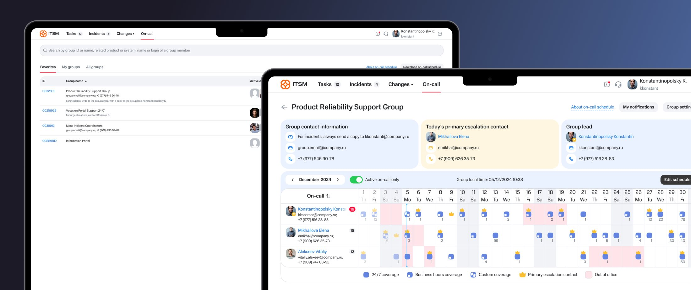
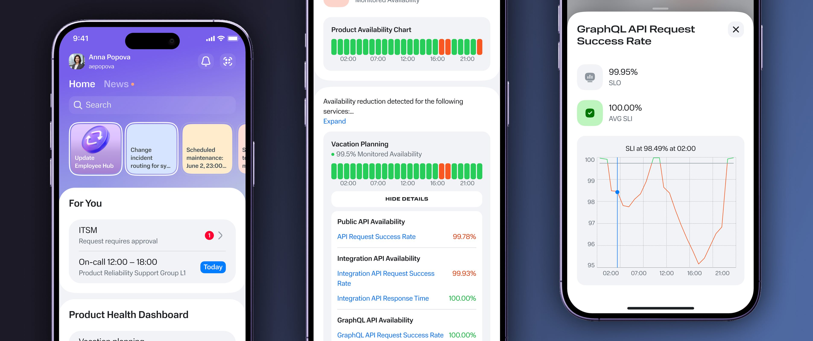
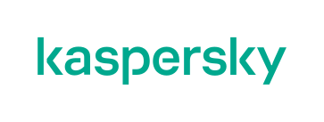

Ekaterina Sharipova
Product designer4+ years of experience simplifying complex workflows through research, clear interaction logic, and thoughtful end-to-end design.

Simplifying On-call Planning in an ITSM System
Redesigned the on-call planning flow in a 4-month sprint. Research showed the existing calendar view already worked for support teams — so instead of reinventing it, I focused the redesign on simplifying everything around it.

Introducing a New Service in an Employee App
Owned the end-to-end UX for bringing a critical monitoring service to mobile — turning a dense desktop experience into a focused flow employees could rely on during time-sensitive incidents.
About
I joined a company as an intern for an unrelated role, but ended up designing an internal tool for our support team. That project hooked me, and for the 4+ years since, I've chosen to keep working on exactly this kind of problem: complex B2E SaaS and internal products.
What I enjoy most is having room to shape a product's direction, not just execute a spec. Early on, one of my projects didn't even have an analyst yet, so I filled that gap too — and for the first time, the work felt genuinely mine.
I'm also drawn to mentoring. I currently mentor a junior designer — helping her navigate practical constraints like edge cases and scalability, while she's pushed me to pay far more attention to visual polish in return. In my next role, I'd like to keep growing this side of my work alongside hands-on design.
Outside of work, I'm usually planning my next trip. I'm not a lie-on-the-beach traveler — I want to see how people live, learn the culture, and end up somewhere naturally stunning. My last trip, to Kamchatka, checked every box: volcanoes, river rafting, and boat trips to spot whales and orcas.
Experience

Kaspersky